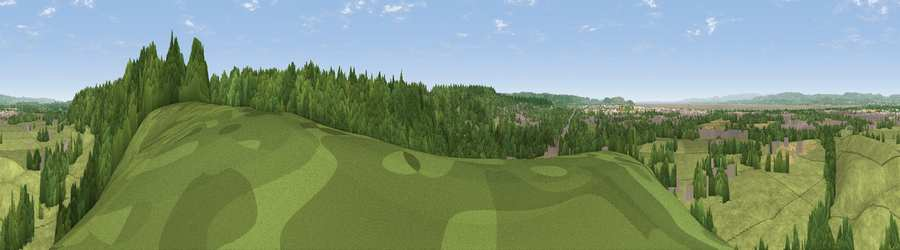

Viewpoint near Hallen
#14017 in England · top 21% of its area beats it · near HallenWhere it is
The exact computed spot (ST 55375 80075). Click the marker for map links.
The view, rendered

A 360° render of this exact spot computed from the terrain model, tree cover and land cover — summer colours, afternoon light, calibrated against photographs of famous viewpoints. Real trees, hedges and buildings will differ in detail.
The panorama
Grey silhouette: terrain skyline in each direction (720 bearings, Earth curvature and refraction included). Dashed green: skyline with trees (+15 m) and buildings (+8 m) as obstacles. Blue strip: how far the ground is visible on each bearing.
Where the view opens
Wedge length = distance to the farthest visible ground on that bearing (vegetation-aware). Rings at 10, 25 and 50 km.
What fills the view
43% grassland · 41% woodland · 13% built-up · 2% cropland · 1% water
Angular shares of the visible panorama (visual magnitude), not map area. Landscape diversity 0.49 (0–1 Shannon).
Key numbers
More beautiful places nearby
The staircase of upgrades: each row has a higher view potential than everything closer. Driving times are estimates from straight-line distance, calibrated against real road routing — check an actual route before setting out.
| Place | Direction | Drive | Score |
|---|---|---|---|
| Viewpoint near Hallen | S · 2 km | ~6 min | 66.7 |
| Viewpoint near Almondsbury | NE · 5 km | ~12 min | 68.3 |
| Viewpoint near Tickenham | SW · 13 km | ~23 min | 72.1 |
| Dundry Hill | S · 13 km | ~24 min | 72.4 |
| Viewpoint near Norton Malreward | SSE · 14 km | ~26 min | 72.9 |
| Dial Hill | WSW · 17 km | ~29 min | 74.9 |
| Hanging Hill | ESE · 19 km | ~32 min | 76.4 |
| Beacon Batch | SSW · 24 km | ~39 min | 79.4 |
51.51782, -2.64452 · source: screening · position refined by local search. Computed location — check access rights before visiting.